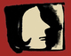

پذيرش > تریبون > گزارش كمپين > با زنان در خبر، از طرح افزایش نمایندگان زن در مجلس تا افزایش محدودیتها بر (...)


 با زنان در خبر، از طرح افزایش نمایندگان زن در مجلس تا افزایش محدودیتها بر زنان با زنان در خبر، از طرح افزایش نمایندگان زن در مجلس تا افزایش محدودیتها بر زنان
4 آذر 1390 - - نسخه قابل چاپ
تغییر برای برابری- نوید محبی
همزمان با 25 نوامبر روزجهانی مبارزه با خشونت علیه زنان، خشونت علیه زنان در ایران همچنان استمرار دارد. در گزارش ده روز گذشته، به طرح افزایش تعداد نمایندگان زن در مجلس،داستان ادامه دار و تلخ اسیدپاشی ها،ادامه ی فشارها بر دانشجویان دختر،ایجاد کمپین های یک میلیون امضایی و موازی کاری با فعالیت های زنان، و بازداشت روژین محمدی وبلاگ نویس از جمله خبرهایی است که بدان ها پرداخته شده است.
هدف از طرح افزایش نمایندگان زن
مریم بهروزی دبیر کل جامعه ی زینب از تهيهشدن طرحي از سوي احزاب شوراي زنان اصولگرا خبر داد که در آن بر اين نکته تاکيد شده است که مجلس طرحي را با قيد فوريت ارايه دهد و ۱۰ درصد کرسيهاي مجلس از آن زنان شود.و حتی این تشکل چشم انداز فعالیت خود را افزایش تعداد نمایندگان زن در مجلس نهم دانسته است. آنطور که از اظهار نظرهای مسئولین بر می آید به حضور زنان نیاز هست تا فراکسیون زنان تشکیل شده و قدمی برای بهبود وضعیت زنان برداشته شود. در همین رابطه اخیرا فاطمه آجرلو نماینده البرز یادآور شده که اگر در مجلس بعد هم تعداد نمایندگان زن کم باشد، نمیتوان فراکسیون زنان تشکیل داد.
پس از انقلاب و تشکیل مجلس تا به حال از بین 2400 نماینده تنها 68 تن از آنان از زنان بودند و با احتساب تکرار حضور برخی از نمایندگان تا به حال 45 تن از زنان توانستند به مجلس شورای اسلامی راه پیدا کنند که به جز برخی از نمایندگان در مجلس ششم اغلب آنها از جناح محافظه کار و اسلام گرایانی که مواضعی مردسالارانه دارند بوده اند که در بسیاری از لوایح موجود در مجلس علیه حقوق زنان فعال بوده اند .در حال حاضر از 292 نماینده مجلس تنها 8 نفر از آنان را زنان تشکیل می دهند که از طرح هایی نظیر جداسازی و تفکیک جنسیتی حمایت می کنند.
آیا افزایش تعداد حضور زنان در مجلس، اگر دغدغه های برابری خواهانه نداشته باشد می تواند به خودی خود دردی از مشکلات زنان در ایران را دوا کند؟ پروین اردلان فعال حقوق زنان در این باره می گوید: «ورود زنان برابری خواه به مجلس ایران به سختی امکان پذیراست، اگر عده ای هم به طور معجزه آسایی برسند هم اندک اند و هم توان مبارزه با این ساختار را ندارند به همین دلیل نقش زنان برابری خواه خارج از قدرت و مجلس تاثیر بیشتری دارد، حداقل طی این سال ها دیده ایم که با فشار جنبش زنان و بخش زنان خارج از قدرت و مجلس، گفتمان برابری خواهی به جامعه راه پیدا کرده است و خارج از تاثیر مثبت یا منفی آن، مجلس را به واکنش واداشته است. با وجود این، حتی در شرایط غیر دموکراتیک و مرد محور حاکمیت و مجلس در ایران، زن نماینده غیر برابری خواه در مقایسه با مرد همفکر خودش وقتی به مسند نمایندگی می نشیند تازه به تبعیضی که علیه خودش به خاطر جنسیتش در مجلس ایران می شود پی می برد و این می تواند تکانه ای جنسیتی برای او باشد یعنی وقتی دامن خودش را هم می گیرد متوجه می شود. این پدیده ی « دامان گرفتن» در تاریخ سیاسی جامعه ایران بعد از انقلاب و تغییر گرایش و نگرش های زنان ومردان حاضر در قدرت بسیار بارز بوده است.
بنابراین من در پاسخ به سوال شما جواب مثبت یا منفی ندارم. خلاصه کنم در ساختار کنونی نهاد قانونگذاری، همه زنان حق مشارکت سیاسی و نماینده شدن دارند اما همه زنان نمی توانند خود را کاندیدای نمایندگی در مجلس کنند. چون فیلتر شورای نگهبان موانع ایدئولوژیکی، سیاسی و جنسیتی دارد و از همان ابتدا بخش اعظمی از زنان را حذف می کند. اما همین ساختار برای موافقان آن چگونه است؟ آن عده از زنانی که صلاحیت مورد نظر شورای نگهبان را دارند و غالبا کاندیدای احزاب و گروه های رسمی و پذیرفته شده هستند، در مقایسه با تعداد مردان نماینده همکیش خود، هم بسیار اندکند و هم بی قدرت. به لحاظ کیفی، غالبا این نمایندگان بیش از آن که مدافع حقوق زنان باشند پشتوانه ی زنانه ی مجلس مرد سالار ایران و گاه پشتوانه ی تبلیغاتی حاکمیت در جامعه جهانی هستند، و دامنه عمل شان در حوزه دفاع از حقوق زنان نیز محدود است. با وجود همه این نتیجه گیری های منفی، به نظرمن، افزایش تعداد این زنان در مجلس بهتر از کاهش آنان است. حداقل در مقایسه با مردان هم ردیفشان
امکان آگاهی زنان از کسر جنسیتی و بی قدرتی شان در مجلس بیشتر است و می تواند زمینه ساز اقداماتی چون تشکیل فراکسیون باشد، مضاف این که زن نماینده ای که برابری خواه نیست بیش از نمایندگان مرد از سوی جامعه زنان مورد پرسش و انتقاد قرار می گیرد و بیشتر ناچار به پاسخ گویی است. اما، این تصور که با افزایش تعداد نمایندگان زن در مجلس کنونی مشکلات زنان حل شود تصوری واقعی نیست.»
وقوع اسیدپاشی های متعدد در آستانه روز منع خشونت علیه زنان
هنوز مدت زمان زیادی از ماجرای جنجال برانگیز آمنه و تلاش او برای گرفتن حکم قصاص نمی گذرد که باز هم در روزهای نزدیک به روز جهانی منع خشونت علیه زنان شاهد سه واقعه ی دلخراش اسید پاشی در شهرهای مختلف ایران بوده ایم،در آن زمان وقتی از آمنه سوال می شد که به چه دلیل تا به این حد بر اجرای حکم قصاص اصرار می ورزد پاسخ می داد این باید درس عبرتی باشد برای دیگران تا هیچ وقت کسی فکر اسید پاشی به ذهنش خطور نکند و قصاص را جلو روی خود ببیند،اما باز هم آمنه زمان اجرای حکم از کور کوردن کسی که بینایی اش را از او گرفت صرف نظر کرد و بزرگوارانه بخشید و در زمان اجرای حکم گفت من قصدم از ابتدا این بوده که به عنوان یک زن نشان بدهم که می توانم از حق خودم دفاع کنم و هشدار بدهم که اگر من بخشیدم آن هایی که چنین افکاری در مخیله شان می گذرد بدانند دیگران حق شان را خواهند گرفت.
مخرج مشترک اغلب داستان های اسیدپاشی در ایران پاسخ منفی زنان به خواستگاران و کینه جویی شخصی و خانوادگی است.مورد اول اما در کرمانشاه اتفاق افتاد یک جوان خواستگار وقتی با پاسخ منفی زن جوان برای ازدواج روبهرو شد، با اسیدپاشی از وی انتقام گرفت.ماموران با اعزام به محل در تحقیق از همسایهها متوجه شدند فرد نقابداری به زن جوان حملهور شده و پس از اسیدپاشی فرار کرده است. پس از حادثه نیز یک مرد جوان به زن مصدوم نزدیک شده و با ادعای این که شوهر اوست وی را به بیمارستان منتقل کرده است.با شروع تحقیقات پلیس در این زمینه ساعاتی بعد یکی از مسوولان بیمارستانی در کرمانشاه با مرکز پلیس تماس گرفت و مانع از خروج آن مرد از بیمارستان شد و در ادامه ی این تحقیقات این مرد دستگیر و مشخص شد که وی خواستگار این زن بوده که چندین بار با پاسخ منفی وی روبه رو شده است.پزشکان اعلام کردند زن جوان به شدت آسیب دیده و احتمال کورشدن وی وجود دارد.
مورد دوم اما داستان بسیار غم انگیز و تکان دهنده ای دارد،در تابستان امسال بود که مادر و دختر جوانی در یکی از روستاهای ایلام قربانی اسیدپاشی شدند، دختر جوان كه تنها يك هفته به عروسياش باقي مانده بود و به سختي حرف ميزد اینطور شرح می دهد:": چند ساعت پيش من و مادرم در خانهمان در خواب بوديم كه ناگهان با احساس سوختگي شديدي كه روي صورتم حس ميكردم، از خواب پريدم. در همان لحظه عمو و زنعمويم ( ليلا و يادگار) را ديدم كه مقابل من و مادرم ايستاده بودند.با گذشت چند روز از بستري شدن اين مادر و دختر در بيمارستان، صبح چهارم مرداد، دختر جوان به علت شدت جراحات وارده ناشي از سوختگي با اسيد دچار ايست قلبي شد و در بيمارستان جان باخت. اين درحالي بود كه مادرش نيز به علت سوختگي شديد در بخش ديگري بستري بود.پزشك معالج زيور نيز در گفتوگو با خبرنگار ايسنا با بيان اينكه صورت زيور صد در صد سوخته است گفته که 80 درصد از بدن اين فرد نيز به علت شدت جراحات وارده ناشي از اسيد دچار سوختگي درجه سه شده بود.وي با بيان اينكه اسيد تمامي لايحههاي پوست زيور را سوزانده است گفت: چشم چپ اين فرد در اسيد ذوب شده است و چشم راست اين فرد نيز در حد تشخيص نور توان دارد.
مورد سوم داستان اسید پاشی بر روی زنی مشهدی است،، اين حادثه ساعت ۲۰ دقيقه بامداد هنگامي رخ داد که مادري با دختر ۶ ساله اش داخل يک خودرو منتظر همسرش بود که ناگهان موتورسواري که کلاه کاسکت بر سر داشت به بهانه پرسيدن آدرس کنار خودرو پارک شده متوقف شد و با نشان دادن يک تکه کاغذ از زن جوان خواست تا شيشه را پايين بدهد، اما زن ۲۹ ساله که به حرکات موتورسوار مشکوک شده بود با اشاره دست به او فهماند که آدرس را نمي داند. موتورسوار که نقشه شومي را در سر مي پروراند در يک لحظه در خودرو را باز کرد و شيشه محتوي اسيد را روي مادر و فرزند پاشيد و بلافاصله از محل دور شد.این زن گفت که مرد اسید پاش جلوی چشمان او و مادرشوهرش سطل اسید را روی وی و دخترش خالی کرده، پزشکان معالج اين زن نيز پس از انجام معاينات اوليه اعلام کردند که چشم چپ اين زن ۲۹ ساله در مرحله حاد قرار دارد و ۷۰ درصد آن از بين رفته است.
همچنین در خبری مرتبط با حوادث اسیدپاشی حکم عامل اسیدپاشی آمنه بهرامی از جنبه ی عمومی صادر و وی به 15 سال حبس و تبعيد محکوم شد. در حاليكه آمنه بهرامي در مصاحبههاي مختلف اعلام كرده بود ديه چشمان و قسمتهاي آسيبديده صورتش را ميخواهد، پرونده با اعلام رضايت قطعي آمنه و بدون طرح درخواست ديه چشمان دوباره به شعبه 71 برگشت و از آنجایي كه در برگه صورتجلسه آمده بود كه آمنه بهطور قطعي اعلام رضايت كرده و آمنه نيز زير آن را امضا كرده بود هيات قضات وارد شور شدند و درنهايت اعلام كردند مجيد را به لحاظ جنبه عمومي جرم به 10 سال حبس و پنج سال تبعيد محكوم ميكنند. اين در حالي است كه آمنه بهرامي اعلام كرد در روز گذشت از قصاص نميدانسته چه چيز را امضا كرده است.
گویا داستان غم انگیز اسیدپاشی در ایران را پایانی نیست و آمنه های زیادی همچنان قربانی این خشونت حاد خواهند شد..آیا سنت تلاش آمنه برای اجرای حکم قصاص و بخشش او در زمان اجرای حکم را دیگر قربانیان اسیدپاشی بعد از وی هم دنبال خواهند کرد یا شاهد اجرای قصاص و عمل متقابل دولت در قبال مجرمین خواهیم بود؟به نظر می آید نه بی توجهی به مساله ی اسیدپاشی و پیشگیری از وقوع جرم و مجازات های قضایی به شکلی که امروزه در جریان است قابل قبول است و نه حکم قصاص و اسیدپاشی و کورکردن افراد دیگر می تواند انسانی باشد،باید به دنبال راه حل سوم و انسانی بود که هم با آموزش وپیشگیری و قوانین حمایتی از قربانیان باشد و هم مجازاتی متناسب و درخور با مجرمین این قبیل حوادث بود.
افزایش محدودیت دختران دانشجو با تصویت آیین نامه های جدید
علی رغم گذشت دو ماه از آغاز سال تحصیلی جدید محدودیت های جدیدی همچنان برای پوشش دانشجویان و به ویژه دختران اعمال می شود که اخیرا دانشگاه علوم بهزیستی و توانبخشی با تصویب آیین نامه حجاب و عفاف در شورای امر به معروف و نهی از منکر این دانشگاه، تمامی دانشجویان را ملزم به رعایت احکام شرعی و قانونی در زمینه حجاب و عفاف و رعایت مفاد این آیین نامه کرده و در صورت عدم رعایت حراست داشگاه دانشجویان را تهدید به برخوردهای انضباطی کرده است. عدم استفاده از جوراب کوتاه و نازک و کفش های طرح دار مانند چکمه و صندل و... استفاده از کلاه به جای مقنعه و پرهیز از لباس های رنگ روشن ، عدم استفاده از شلوار تنگ، چسبان و کوتاه و یا مانتوهای تنگ، کوتاه، نازک، چاک دار، طرح دار از جمله ی این محدودیت هاست.
کمپینی ها زیر سایه ی تهدید و فشار،راه اندازی کمپین های جدید یک میلیون امضایی
نام کمپین یک میلیون امضا یادآور یکی از بزرگترین حرکت های برابری خواهانه زنان در خاورمیانه است که از سال 1385 تاسیس و با شعار تغییر برای برابری همچنان به فعالیت خود ادامه می دهد.کمپین یک میلیون امضا در طی این سال ها با سرکوب و ایجاد محدودیت از طرف حاکمیت روبه رو شده که تنها در بازداشت و احضار فعالین این کمپین خلاصه نمی شود،در جدیدترین این سنگ اندازی ها می توان به ایجاد کمپین های متعدد تحت عنوان کمپین یک میلیون امضا با هدف موازی کاری و کم رنگ کردن سابقه ی فعالیت های زنان در قالب کمپین یک میلیون امضا اشاره کرد.
اخیرا سایتی تحت عنوان کمپین یک میلیون امضا علیه احمد شهید گزارشگر ویژه حقوق بشر تاسیس شده که خبرگزاری فارس هدف از ایجاد آن را دفاع از حقوق بشر حکومت ایران خوانده است.پیش از آن نیز کمپین هایی با همین عناوین به منظور آنچه حمایت برای توقف جنایت آل سعود و آل خلیفه در بحرین ،حمایت از خیزش های اسلامی منطقه خوانده شده نیز تشکیل گردیده بود.در سایت هایی که به منظور این کمپین ها راه اندازی شده از دیگران درخواست شده که این کمپین ها را امضا کنند چرا که اگر به یک میلیون برسد مسئولین سازمان ملل مجبور به رسیدگی در آن زمینه خواهند بود،در حالی چنین در خواست هایی از سوی رسانه های دولتی مطرح می شود که کمپین یک میلیون امضا برای تغییر قوانین تبعیض نیز که به دنبال جمع آوری یک میلون امضا بوده با بی مهری های متعددی از سوی حاکمیت مواجه شده و هم اکنون دو تن از اعضای آن فرشته شیرازی و محبوبه کرمی در زندان به سر می برند.
با زنان در زندان ها
مهدیه گلرو فعال دانشجوئی و دبیر انجمن اسلامی دانشکدۀ اقتصاد علامه طباطبائی که از تاریخ ۱۱ آذر ماه سال ۱۳۸۸ در بازداشت به سر میبرد به دو سال و چهار ماه زندان محکوم شده بود که با احتساب بازداشتهای قبلی قرار بود روز جاری از زندان آزاد شود بود اما با توجه به حکم شش ماههای که در آبان ماه جاری از سوی شعبه ۲۸ دادگاه انقلاب به ریاست قاضی مقیسه صادر شده است وی باید شش ماه دیگر در زندان بماند و از امروز حکم شش ماهۀ خود را در زندان اوین سپری میکند، این حکم تازه به خاطر انتشار نامهای به مناسبت روز دانشجو از سوی وی در سال گذشته و به اتهام «تبلیغ علیه نظام» صادر شده است
به گزارش خبرگزاری هرنا" سیمین گرجی " شهروند بهایی ساکن قائم شهر صبح روز شنبه ۲۸ آبان ماه پس از احضار و معرفی خود به ستاد خبری اداره اطلاعات شهرستان مذکور بازداشت شد..بنا به اطلاع گزارشگران این خبرگزاری از قائم شهر، نامبرده پیش از این یک دوره محکومیت شش ماهه را به شکل انفرادی درزندان شهید کچویی ساری گذرانده است.
به گزارش کمیته ی گزارشگران حقوق بشر روژین محمدی دانشجوی رشته پزشکی دانشگاه مانیل در فیلیپین، پس از بازگشت به ایران بازداشت و به زندان اوین منتقل شد.این وبلاگ نویس ۹ روز پیش در تاریخ ۲۳ آبان از فرودگاه استانبول به تهران پرواز کرده بود که پس از پیاده شدن در فرودگاه توسط نیروهای امنیتی بازداشت و به زندان اوین منتقل شد.وی پس از ۲۴ ساعت به قید وثیقه آزاد شد اما ۵ روز بعد نیروهای امنیتی جمهوری اسلامی در تاریخ ۲۸ آبان جهت بازداشت وی به خانهی پدریاش در کرمانشاه یورش بردند که به علت عدم حضور وی در این شهر موفق به بازداشتش نشدند..روژین محمدی بار دیگر بصورت تلفنی در تاریخ ۳۰ آبان به دادسرای شهید مقدسی زندان اوین احضار شد که پس از دستور ضبط وسایل شخصی از جمله کامپیوتر دستیاش و سه روز بازجویی متوالی، نهایتن امروز ۲ آذر مجددن قرار بازداشتش صادر و او را به زندان اوین منتقل کردند.
همچنین جرس خبر داده که پرستو فروهر فرزند داریوش فروهر رهبر حزب ملت ایران و همسرش پروانه اسکندری که در جریان قتل های زنجیره ای به قتل رسیده بودند به وزارت اطلاعات احضار و در رابطه با برگزاری هرگونه مراسمی تهدید شد.
 Show quoted text - Show quoted text -
ارسال به
بالاترین
،
توییتر
،
فریندفید
،
فیسبوک
در همين بخش :
 دهمین دورۀ مراسم تندیس صدیقه دولت آبادی ۱۳۹۲ دهمین دورۀ مراسم تندیس صدیقه دولت آبادی ۱۳۹۲
کارت پستالهایی به بهانهی هشت مارس و به یاد همهی مبارزین راه برابری
بیانیه بیش از 350 تن از مدافعان حقوق زنان به مناسبت روز جهانی زن؛ زنان هر روز فرودستتر میشوند
لباسی که برای تن ما دوخته اند! /اعظم بهرامی
چالشها و چشمانداز فعالیت مدنی زنان
ديگر بخش ها :
طرح یک میلیون امضا
|
مقالات
|
سایت نوشته ها
|
اخبار
|
گزارش كمپين
|
گفت و گو
|
علیه سکوت
|
كوچه به كوچه
|
نامه های شما
|
گزارش ویژه
|
گفتگو با اعضا
|
ویژه سالگرد کمپین
|
تصویر برابری
|
دل آرام علی
|
تریبون
|
مقالات
|
تاریخ شفاهی
|
خارج از چارچوب
|
کتابخانه
|
درباره کمپین
|
کمپین در شهرها
|
کمپین در بند
|
صدای تغییر
|
ویژه 22 خرداد
|
لایحه حمایت از خانواده
|
گالری
|
عشا مومنی
|
امیر یعقوبعلی
|
خدیجه مقدم
|
راحله عسگری زاده و نسیم خسروی
|
پروین اردلان،جلوه جواهری، مریم حسین خواه، ناهید کشاورز
|
زینب پیغمبرزاده
|
سعیده امین، سارا ایمانیان، محبوبه حسین زاده، ناهید کشاورز و همایون نامی
|
احترام شادفر
|
نسیم سرابندی زاده،فاطمه دهدشتی
|
وبلاگ مهمان
|
پرونده خرم آباد
|
دستگیری ها
|
مریم مالک
|
پرستو اللهیاری
|
مهرنوش اعتمادی
|
سمیه رشیدی
|
Other Languages
|
همراهان
|
«فراخوان کمپین ده روز با بهاره هدایت»
| English
|